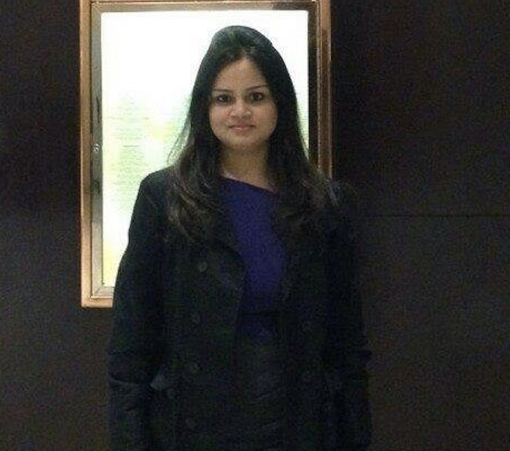

Fullstack Software developer with a passion for problem solving, learning, growing, debugging, and producing products that better the world.I always have a passion for responsive-website so I started as a hobby in early 2017 with self learning. I soon developed a taste of web design and started taking it more seriously and learning web development technologies. The more I learn, the more it amazes me with its various and endless knowledge. I also love to apply logic to solve problems so I forge my path by seeking out opportunities to merge my passion for code with my other strengths and interests. I am fascinated to work as a web developer making conscientious UX/UI decisions which can make even complex technologies accessible to people from all walks of life.
During my free time I love to cook and play with my dog. I love adventure sports like skydiving, parasailing, skiing and jet ski.
